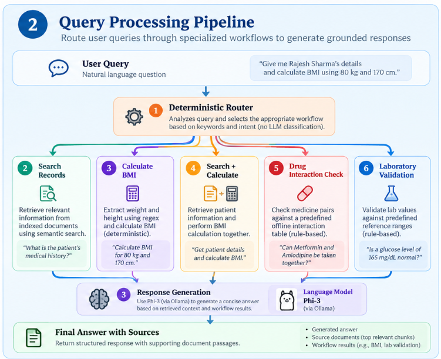
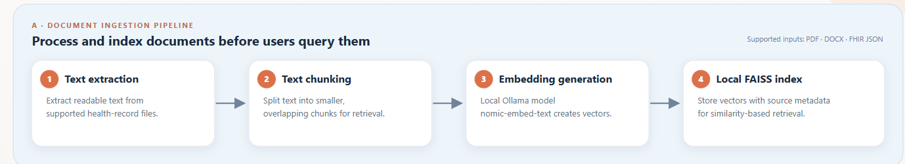
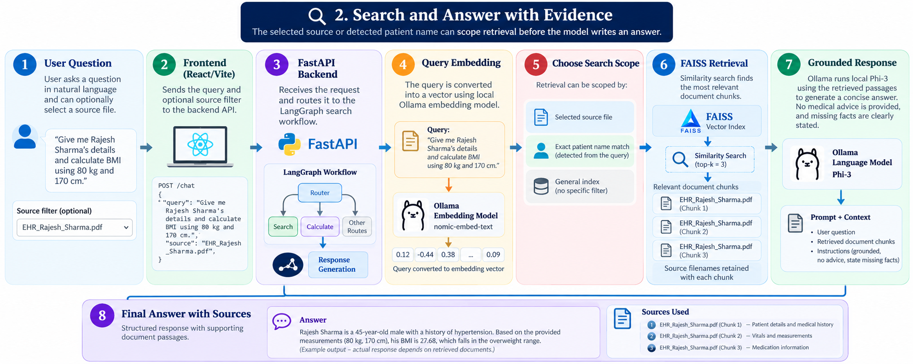
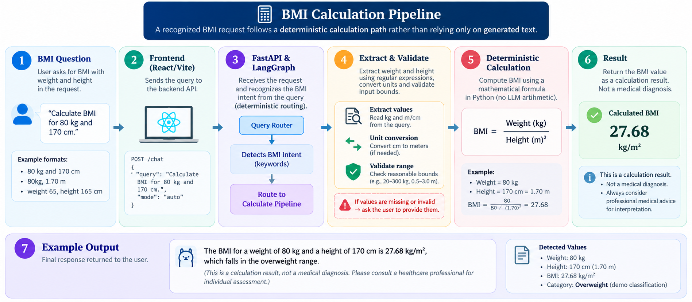
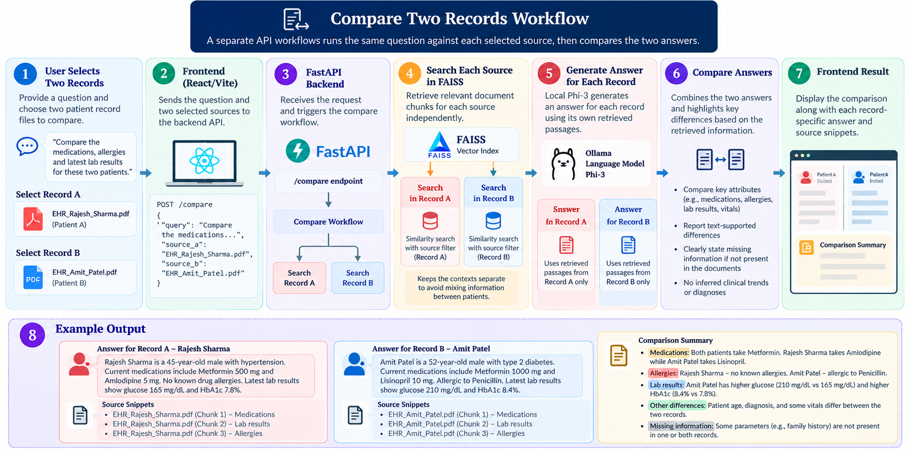
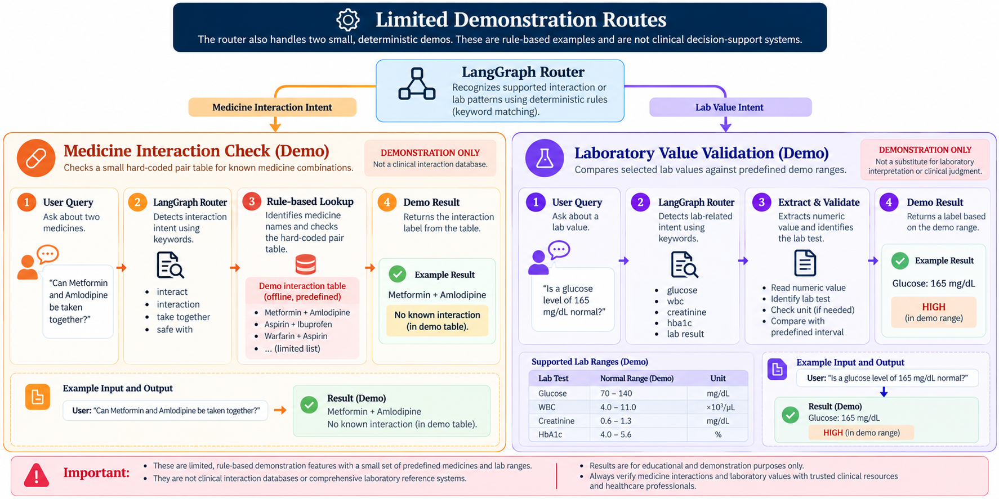

MediRAG · Project walkthrough
Project flow diagrams
Use the buttons to jump to a workflow, or scroll through all the diagrams in sequence. These are the diagrams supplied for the MediRAG project.
← Back to MediRAG project detailsWorkflow overview
Query processing pipeline

Before a query
Document ingestion pipeline

Retrieval-augmented question answering
Search and answer with evidence

Deterministic calculation
BMI calculation pipeline

Record-specific retrieval
Compare two records

Rule-based examples
Limited demonstration routes

Prototype note: These diagrams illustrate the supplied screenshots and the current implementation. Medicine and laboratory checks are limited demonstrations, not clinical decision systems. Always verify answers and source records.